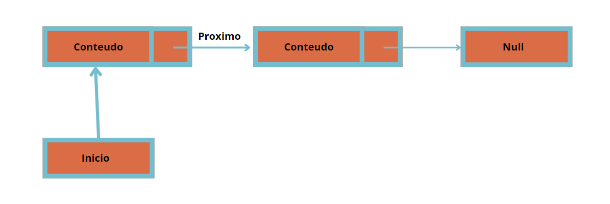
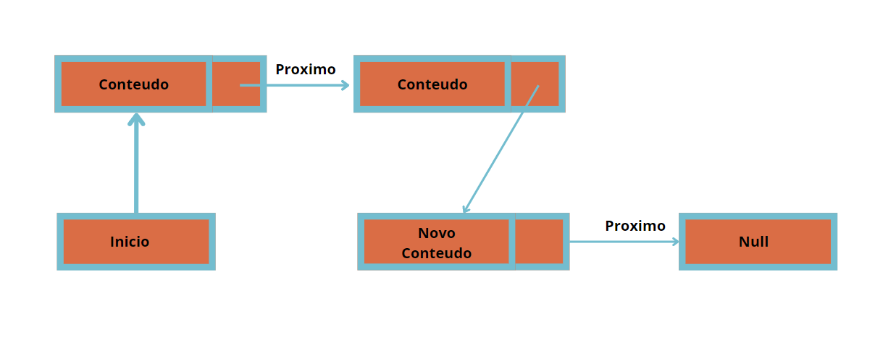
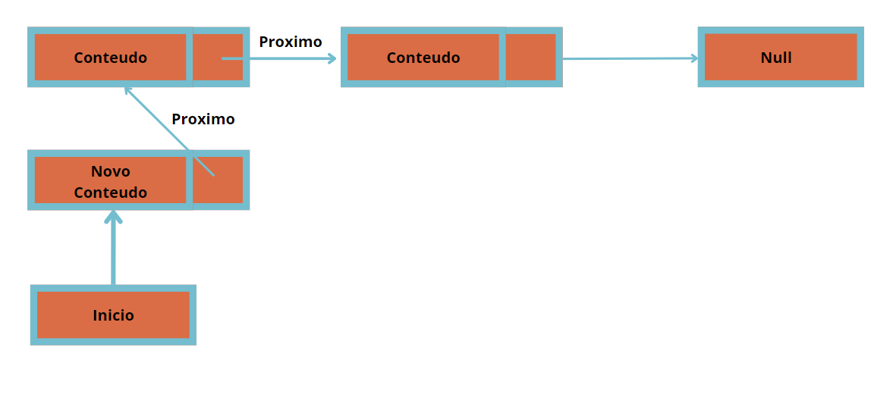
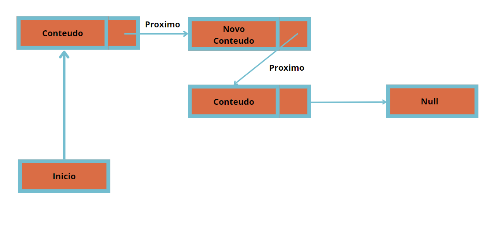

Listas Simplesmente Encadeadas
O que é uma Lista Simplesmente Encadeada?
Imagine que você tem uma fila de amigos, e cada amigo está segurando a mão do próximo amigo na fila. Esta é uma maneira fácil de pensar em uma lista simplesmente encadeada. Cada amigo é um "nó" na lista, e a mão que eles estão segurando é a "ligação" para o próximo nó.
As listas simplesmente encadeadas são importantes na programação porque permitem armazenar e organizar dados de forma eficiente. Elas são usadas quando você precisa de uma estrutura de dados que pode crescer ou diminuir dinamicamente, sem precisar de um tamanho fixo. Além disso, elas facilitam a inserção e remoção de elementos em qualquer ponto da lista.
Como Funciona?
Vamos ver como essa fila de amigos funciona e como você pode brincar com ela. Vamos explorar algumas operações básicas que você pode realizar em uma lista simplesmente encadeada.
Celula de lista Simples
Essa é uma celula de exemplo de Lista simplesmente encadeada
Adicionando um Amigo ao Final
Quando você quer adicionar um novo amigo ao final da fila, você pede ao último amigo que segure a mão do novo amigo. Agora, o novo amigo é o último da fila!
1. using System;
2. using System.Collections.Generic;
3. public class No {
4. // Declaração do campo público Valor para armazenar o valor do nó.
5. public int Valor;
6. // Declaração do campo público Proximo para referenciar o próximo nó na lista.
7. public No Proximo;
8. public No(int valor) {
9. // Inicializa o campo Valor com o valor passado como parâmetro no construtor.
10. Valor = valor;
11. // Inicializa o campo Proximo como nulo, indicando que inicialmente não há próximo nó.
12. Proximo = null;
13. }
14. }
15. public class ListaSimplesmenteEncadeada {
16. // Declaração do campo privado primeiro para armazenar o primeiro nó da lista.
17. private No primeiro;
18. public ListaSimplesmenteEncadeada() {
19. // Inicializa o campo primeiro como nulo, indicando que a lista está vazia inicialmente.
20. primeiro = null;
21. }
22. // No trecho abaixo, estamos adicionando um novo nó ao final da lista simplesmente encadeada.
23. public void AdicionarAmigoAoFinal(int valor) {
24. No novoNo = new No(valor); // Cria um novo nó com o valor fornecido.
25.
26. if (primeiro == null) {
27. // Se a lista está vazia, define o novo nó como o primeiro nó da lista.
28. primeiro = novoNo;
29. } else {
30. // Se a lista já contém elementos, percorre até o último nó e adiciona o novo nó ao final.
31. No atual = primeiro;
32. while (atual.Proximo != null) {
33. atual = atual.Proximo;
34. }
35. atual.Proximo = novoNo;
36. }
37. }
38. }
Explicações
a ultima celula da lista que aponta para null começa a apontar para a nova celula que agora aponta pra null
Adicionando um Amigo ao Início
Quando você quer adicionar um novo amigo ao início da fila, o novo amigo segura a mão do amigo que estava na frente, e agora ele é o primeiro da fila!
1. using System;
2. using System.Collections.Generic;
3. public class ListaSimplesmenteEncadeada {
4. // Declaração do campo privado primeiro para armazenar o primeiro nó da lista.
5. private No primeiro;
6. public ListaSimplesmenteEncadeada() {
7. // Inicializa o campo primeiro como nulo, indicando que a lista está vazia inicialmente.
8. primeiro = null;
9. }
10. // No trecho abaixo, estamos adicionando um novo nó ao início da lista simplesmente encadeada.
11. public void AdicionarAmigoAoInicio(int valor) {
12. No novoNo = new No(valor); // Cria um novo nó com o valor fornecido.
13. novoNo.Proximo = primeiro; // O próximo do novo nó aponta para o atual primeiro nó.
14. primeiro = novoNo; // Atualiza o primeiro nó para ser o novo nó adicionado.
15. }
16. }
Explicações
o proximo da nova celula aponta pra antiga nova celula e o inicio agora aponta para a nova celula
Adicionando um Amigo no Meio
Quando você quer adicionar um novo amigo no meio da fila, você pede ao amigo que está no meio para segurar a mão do novo amigo, e o novo amigo segura a mão do próximo amigo. Agora, ele está no meio da fila!
1. using System;
2. using System.Collections.Generic;
3. public class ListaSimplesmenteEncadeada {
4. // Declaração do campo privado primeiro para armazenar o primeiro nó da lista.
5. private No primeiro;
6. public ListaSimplesmenteEncadeada() {
7. // Inicializa o campo primeiro como nulo, indicando que a lista está vazia inicialmente.
8. primeiro = null;
9. }
10. // No trecho abaixo, estamos adicionando um novo nó na posição especificada da lista simplesmente encadeada.
11. public void AdicionarAmigoNoMeio(int valor, int posicao) {
12. No novoNo = new No(valor); // Cria um novo nó com o valor fornecido.
13.
14. if (posicao == 0) {
15. AdicionarAmigoAoInicio(valor); // Se a posição é 0, adiciona o novo nó no início da lista.
16. } else {
17. No atual = primeiro;
18. for (int i = 0; i < posicao - 1 && atual != null; i++) {
19. atual = atual.Proximo; // Percorre a lista até a posição anterior à posição desejada.
20. }
21.
22. if (atual != null) {
23. novoNo.Proximo = atual.Proximo; // O próximo do novo nó aponta para o próximo nó do atual.
24. atual.Proximo = novoNo; // O próximo do atual nó aponta para o novo nó.
25. } else {
26. throw new ArgumentOutOfRangeException("Posição inválida!"); // Lança uma exceção se a posição for inválida.
27. }
28. }
29. }
30. }
Explicações
a celular anterior a nova celula recebe o seu proximo como a propria nova celula e o proximo da nova celula recebe o antigo proximo da celula anterior
Brincando com a Fila
Se você quiser saber quem é o primeiro amigo na fila, você simplesmente pergunta ao amigo que está na frente. E se quiser saber quem vem depois, é só perguntar a cada amigo quem eles estão segurando a mão.
1. using System;
2. using System.Collections.Generic;
3. public class ListaSimplesmenteEncadeada {
4. // ... (outros métodos)
5.
6. // Retorna o primeiro nó da lista simplesmente encadeada.
7. public No VerPrimeiroAmigo() {
8. return primeiro; // Retorna o nó armazenado na variável primeiro.
9. }
10.
11. // Retorna o próximo nó após o nó atual na lista simplesmente encadeada.
12. public No VerProximoAmigo(No atualAmigo) {
13. return atualAmigo?.Proximo; // Retorna o nó armazenado no campo Proximo do nó atual, se existir.
14. }
15. }